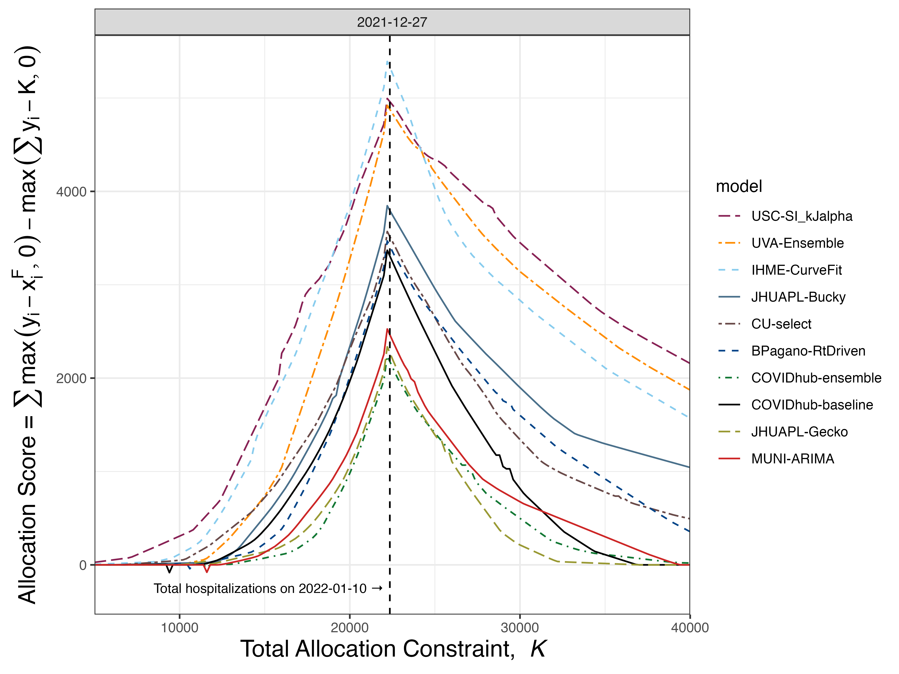

Infectious Disease Forecast Evaluation Based On Realized Social Utility:
Allocation Scores
ISF 43
School of Public Health and Health Sciences, UMass, Amherst
Introduction
About me:
- PhD in pure math
- transitioned to public health data science
- started as RA with Nick and Evan at reichlab.io at UMass in 2021
- maintain COVID-19 Forecast Hub ensemble
- current research goals center on ensemble methodology
- focus on scoring rules, decision theory, forecast-policy alignment

Evolution of ID Forecasting Hubs
Figure credits: Alex Vespignani and Nicole Samay
New directions: “Hubverse” infrastructure project https://hubdocs.readthedocs.io/, genomic targets
Basic products of ID Forecasting Hubs
The Role of ID forecasting Hubs
Outbreak forecasting hubs developed to “inform public health responses”
trend from point and probability (of bins) toward quantile reporting
uncertainty quantification essential to a public health DM (decision maker)
substantial buy-in from policy makers
It’s important to note that while these efforts represent significant advances in the field, forecasting the spread and impact of infectious diseases is a very complex task with many challenges, and these models should be interpreted with caution.
Basic example of interpretation is an allocation decision regarding
- medical supplies
- facility capacity
- personnel
- R&D funding
- public tolerance for NPIs
Scoring rules and social utility
Very briefly, a scoring rule \(S\) assigns a number \(S(F,y)\) to the forecast \(F\) of \(Y\) when \(Y=y\) is realized.
\(S\) if proper if \(\displaystyle{E_{F}[S(F,Y)] \leq E_{F}S(G,Y)]}\) for all \(F, G\)
- ensures that forecasters must give honest forecasts to maximize expected score
Hubs have tried to use proper SRs to rank and combine forecasts in ways that offer best suppport for PH response to ID outbreaks
Primary scoring rule used currently is the Weighted Interval Score which is a discrete approximation to the Continuous Ranked Probability Score (a probabilistic generalization of MAE)
- adopted for convenient scoring of quantile forecasts.
A central goal in design of scoring rules for social good
Create scenario where the forecaster believes maximizing her own expected utility aligns with leading the DM toward actions that maximize social utility.
Bayes Acts
Scoring rules can be cast in decision-theoretic framework of Bayes acts.
The Bayes act relative to a forecast \(Y \sim F\) is the action \(x^F\) by which a DM will minimize expected loss \(E_Y[l]\) assuming that in reality \(Y \sim F\).
- loss \(l\) is a function of the outcome \(y\) and the action \(x\) DM takes in anticipation of \(y\)
Key point: Given \(l\), we have an automatically proper scoring rule \(S(F,y) := l(x^F, y)\)
Our basic example:
- \(x\) and \(y\) are vectors in \(\mathbb{N}_0^{52}\)
- \(y =\) number of severe cases in US states and territories
- \(l(x,y) =\) unmet need when \(x < y\) beds are allocated and \(y\) severe cases occur
Formally
\[ \begin{align} l(x,y) &= \sum_{i=1}^{52} \max(y_i - x_i, 0) = \sum (y_i - x_i)_{+}\\ x^F &\in \left\{ \text{possible } x' \,\middle| \, E_{F}[l(x',Y)] \leq E_{F}[l(x,Y)] \text{ for any possible } x \right\} \end{align} \]
Novelty of our approach for ID forecast evaluation:
Define set of possible \(x\) as those actions which satisfy \(\displaystyle{\sum x_i \leq K}\)
Note:
Our loss function and (single) constraint are very simple prototypes meant for proof of concept.
A Lagrangian formulation for the Bayes act
Given \(F = \{F_i\}_{i=1}^{N}\), obtaining \(x^F\) is a constrained stochastic optimization problem
\[\begin{align} L(x, \lambda ; K, F) &= \sum_{i=1}^N E_{F_i}\left[l(x_i, Y_i)]\right)+\lambda\left(\sum_{i=1}^N x_i-K\right) \\ \nabla_{x} L(x^F, \lambda) = 0 &\implies E_F \left[\frac{d}{dx_i}(Y_i - x_i^F)_{+}\right] + \lambda \\ &= F_i(x_i^F)-1 + \lambda = 0 \implies x_i^F = F_i^{-1}(1-\lambda) \\ \nabla_{\lambda} L(x^F, \lambda^{\star}) = 0 &\implies \sum_{i=1}^{N} F_{i}^{-1}(1-\lambda^{\star}) - K = 0 \implies \boxed{x_{i}^F = F_i^{-1}(1-\lambda^{\star})} \end{align}\]
Our allocation scoring rule is then given by the recipe:
Use forecast \(F\) to form Lagrangian \(L\), for expected loss under a resource constraint
Solve for optimizer \(x^F\) using \(L\)
Plug \(x^F\) and outcome \(y\) into loss function to get \(S(F,y) = l(x^F,y)\)
Basic computational approach
But getting \(x^F\) not so simple.
Even for simple parametric \(F_i\), there is rarely an analytic solution for \(\lambda^{\star}\).
- and we need to reconstruct \(F_i\)’s from quantile forecasts \(q_{i,j}, j = 1,\ldots,23\) to form \(L(x, \lambda ; K, F)\)
Iterative methods
So we resort to a binary search for \(\lambda^{\star}\) following long history in inventory management of solving constrained multi-product newsvendor problems1
Application
December 2021: Omicron wave clearly started US but forecast teams unsure of severity given uncertainty about \(R_0\), cross-protection by vaccination, previous infection, etc.
Results
After adjusting for an oracle the score of an oracle that allocates fairly based on what demands actually occur, scores resemble “value” plots from meteorology
also the Murphy curves of Gneiting et. al.
extreme shortages or surplusses diminish the oracle’s advantage
ranking at peak seems to be consistent with that in large \(K\) region.

Alloscore and WIS rank models differently
Explanations?
Limitations
This is post-hoc analysis
Hub forecasters were unaware of
an allocation score (on joint forecast)
any allocation based loss
our quantile interpolation/extrapolation methods (
distfromq)- might be especially important for tails
We hope/think that allocation scoring is sensitive to implicit dependence structures in forecasts, but all work so far only refers directly to marginals - nothing yet with copulas, etc.
Thank you!
A very rough R package I wrote to implement scoring procedures:
https://github.com/aaronger/alloscore
A less rough package Evan wrote to implement cdf reconstruction
Data workflow
# A tibble: 12 × 9
time model forecast ys K xdf score_raw score_oracle score
<int> <chr> <list> <list> <dbl> <list> <dbl> <dbl> <dbl>
1 1 m1 <tibble [4 × 7]> <dbl [4]> 400 <tibble [4 × 8]> 62.5 0 62.5
2 1 m1 <tibble [4 × 7]> <dbl [4]> 450 <tibble [4 × 8]> 50.0 0 50.0
3 2 m1 <tibble [4 × 7]> <dbl [4]> 400 <tibble [4 × 8]> 150. 27.3 122.
4 2 m1 <tibble [4 × 7]> <dbl [4]> 450 <tibble [4 × 8]> 137. 0 137.
5 3 m1 <tibble [4 × 7]> <dbl [4]> 400 <tibble [4 × 8]> 62.2 0 62.2
6 3 m1 <tibble [4 × 7]> <dbl [4]> 450 <tibble [4 × 8]> 49.7 0 49.7
7 1 m2 <tibble [4 × 7]> <dbl [4]> 400 <tibble [4 × 8]> 54.8 0 54.8
8 1 m2 <tibble [4 × 7]> <dbl [4]> 450 <tibble [4 × 8]> 40.2 0 40.2
9 2 m2 <tibble [4 × 7]> <dbl [4]> 400 <tibble [4 × 8]> 157. 27.3 130.
10 2 m2 <tibble [4 × 7]> <dbl [4]> 450 <tibble [4 × 8]> 149. 0 149.
11 3 m2 <tibble [4 × 7]> <dbl [4]> 400 <tibble [4 × 8]> 74.9 0 74.9
12 3 m2 <tibble [4 × 7]> <dbl [4]> 450 <tibble [4 × 8]> 70.9 0 70.9> a_series_slim$xdf[[9]]
# A tibble: 4 × 8
target_names x score_fun y oracle components_raw components_oracle components
<chr> <dbl> <list> <dbl> <dbl> <dbl> <dbl> <dbl>
1 A 80.4 <fn> 55.0 51.5 0 3.52 -3.52
2 B 92.2 <fn> 250. 234. 157. 16.0 141.
3 C 106. <fn> 89.2 83.5 0 5.70 -5.70
4 D 122. <fn> 33.5 31.3 0 2.14 -2.14National picture

Sharing Business
A Scoring Rule attempts to “share” DM loss with the forecaster through \(S(F,y)\)
idea goes back to Savage
may be in units of money, goodwill, prestige
An explicit vacabulary of social loss in ID forecast evaluation has instrinsic advantage over “off-the-shelf” metrics from statistic inference